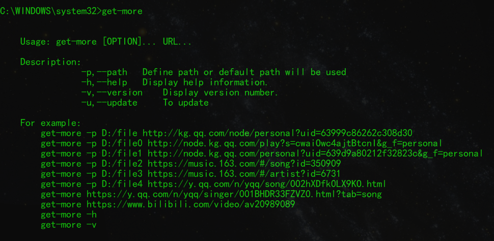
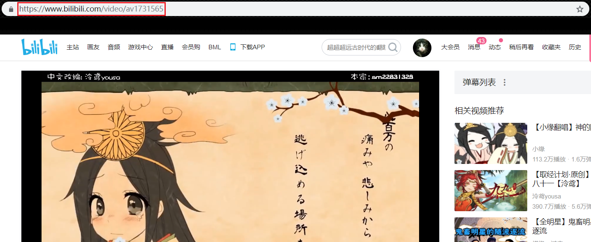

谁适合使用get-tool？如果你是反产权人士，开源软件响应者或黑客精神推崇者，那么别错过他。
—— 我说的
下载get-tool
get-tool 安装包链接如下：
任选其一，自行下载最新版本，并解压到合适的位置
系统&环境
本软件基于
Windows操作系统，依赖Python-3.X环境，若您的Windows无Python-3.X，请先安装Python-3.X,已有该环境的用户可直接跳到步骤3 安装模块。
特附上Python-3.6.5安装包下载链接，当然更希望你从Python官网中下载适合自己的版本，同样自行保存到本地合适的位置。
- 安装Python

- 按图勾选

- 等待安装
- 关闭向导

- 检验安装

安装模块
本软件在
Python标准库基础上还依赖几个第三方模块，具体安装步骤已经写成脚本并转化为可执行文件install.exe
- 双击目录下的install.exe

- 按照提示复制且仅复制
红色边框内的信息

- 添加环境变量-1

- 添加环境变量-2

使用详情
- 打开
命令行提示窗口的三种方法(任选其一,推荐第一种)
- Win10:
WIN+X弹出menu后键入A - Win10:
WIN+X弹出menu后键入C - Win7/Win10:
WIN+R然后输入cmd

- 命令行中输入
get-more获取用法

- 使用效果大概这样

- 可获得的
网站-网址-下载方式如下
全民K歌-歌手URL-批量下载

全民K歌-歌曲URL-单曲下载

网易云音乐-歌曲URL-单曲下载

网易云音乐-歌手URL-批量下载

QQ音乐-歌手URL-批量下载

QQ音乐-歌曲URL-单曲下载
Bilibili-视频URL-视频下载
Youku-视频URL-视频下载

Declarations
- 三家热门网站的音乐单曲与批量下载功能是笔者原创，视频下载功能的贡献来自github的开源项目you-get,同时也是笔者灵感的来源与效法的对象
- 使用过程中出现任何bug欢迎反馈，邮箱如下
- 强烈建议将Windows shell（或命令提示窗口）设置为黑底绿字，绿屏效应还是很酷的
Remarks
本软件仅供Python网络爬虫初学者入门学习借鉴之用，不得用于任何商业用途，不得传播盗版资源，不得侵犯持有版权的公司和创作者的任何利益......